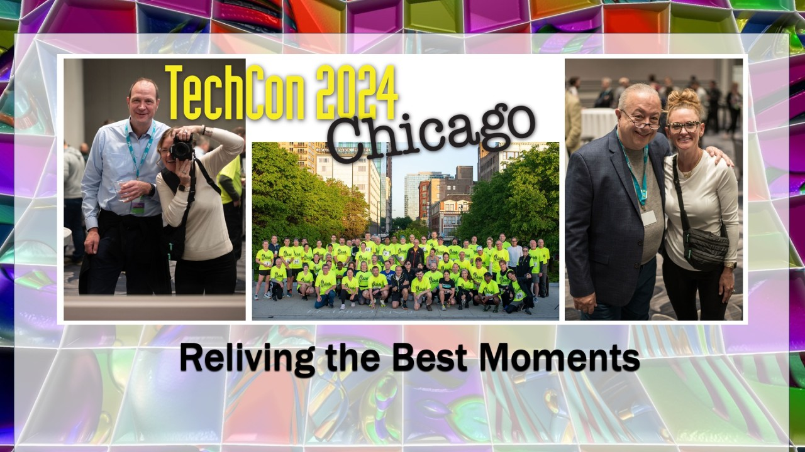

History
TechCon® North America was first held in 1996 in New Orleans, Louisiana. It has since moved about the U.S., accommodating the growing number of delegates and utility hosts. It often includes a regional facility tour of the sponsoring utility. Most recently, the conference averaged 200 in attendance representing 11 various countries and 30 interactive exhibiting corporations. TechCon North America offers a vibrant and unparalleled learning experience with top-notch topics and speakers.
Mission
At TechCon, our mission is to empower innovation, foster collaboration, and drive progress in the technology industry. We aim to connect thought leaders, professionals, and enthusiasts from diverse backgrounds to:
- Inspire Innovation: Showcase groundbreaking ideas, technologies, and solutions that shape the future of industries and communities.
- Build Networks: Create a platform for meaningful connections among innovators, entrepreneurs, investors, and experts from various tech disciplines.
- Advance Knowledge: Facilitate learning and growth through insightful talks, hands-on workshops, and interactive panel discussions led by industry pioneers.
- Promote Inclusivity: Champion diversity and inclusion by ensuring equitable opportunities for underrepresented voices in technology.
- Drive Actionable Change: Encourage the development and adoption of technology that addresses global challenges, enhances human potential, and creates a sustainable future.
We believe that technology is not just a tool but a catalyst for positive transformation. Through TechCon, we are dedicated to building a community where ideas thrive, solutions are born, and innovation is celebrated.
